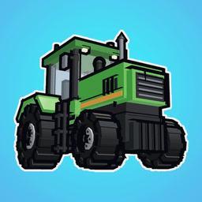
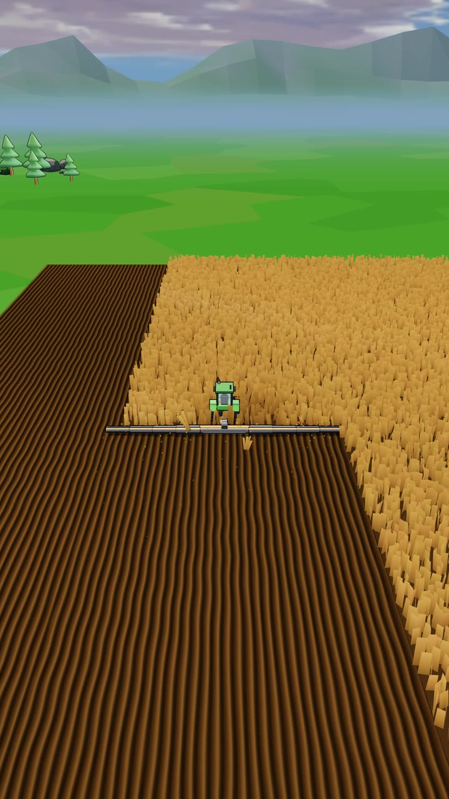

Out now!
Tiny Tractor: Farming Sim
Mow huge fields with your tractor. Sell the harvest, upgrade, expand.
If the store does not open here, tap ⋯ and choose Open in browser.
Tap ⋯ in the top right corner and choose Open in browser.
